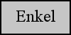
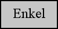

Linjäracceleratorn är den maskin som producerar strålningen och en av finesserna med linjäracceleratorer är att man kan styra hur mycket energi strålningen får. Mängden energi påverkar sedan hur djupt strålningen når i kroppen och anpassas därmed beroende på tumörens placering.
De har dock även ytterligare ett par funktioner. Delvis har den en rörlig brits installerad och en stor del av acceleratorn, den delen som kallas gantry, kan rotera. Denna kombination låter läkaren ställa in acceleratorn så att den träffar tumören perfekt. Att gantryt kan rotera gör även att man kan bestråla tumören från olika vinklar, vilket gör att den friska vävnaden belastas så lite som möjligt. Eftersom att man när man byter bestrålningsvinkel ändrar vilken frisk vävnad som träffas av strålningen, men eftersom tumören är centrerad så utsätts den ändå för strålning.
Ytterligare en funktion som minskar bestrålningen av frisk vävnad är MLC, flerbladskollimatorer. Detta är något som moderna acceleratorer har och de består av fingerliknande blad av bly som kan förflyttas och forma strålningen, detta då blyet inte släpper igenom strålning.